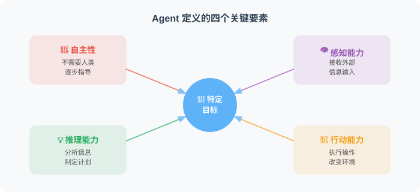
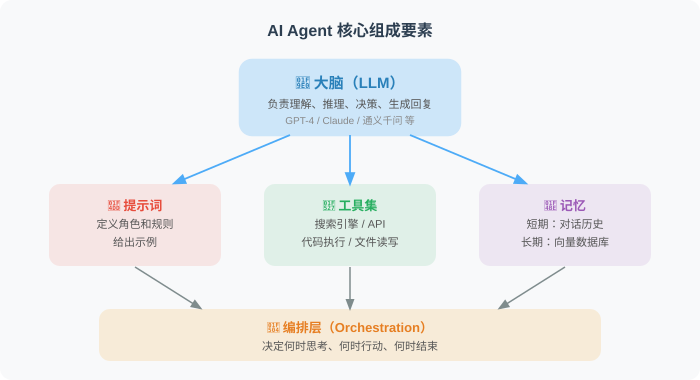

Agent 的核心概念与定义
📖 “如果你无法清晰地定义一个概念，你就无法真正理解它。”
Agent 的正式定义
在 AI 领域，Agent（智能体） 的定义是：
Agent 是一个能够自主感知环境、进行推理决策，并采取行动以实现特定目标的系统。
让我们拆解这个定义中的每个关键词：

Agent 的五大核心特征
特征1：自主性（Autonomy）
Agent 能够在没有人类逐步指导的情况下，自己决定下一步做什么。
# ❌ 非自主的程序（需要人类逐步操作）
def manual_workflow():
"""传统方式：人类决定每一步"""
data = input("请输入数据文件路径: ") # 人决定
format_type = input("请选择分析方式: ") # 人决定
output_path = input("结果保存到哪里: ") # 人决定
# ... 每一步都需要人类干预
# ✅ 自主的 Agent（自己决定执行步骤）
def autonomous_agent(goal: str):
"""Agent 方式：告诉目标，自主完成"""
# 人只需要说："帮我分析上个月的销售数据，找出增长最快的产品"
# Agent 自主决定：
# 1. 去哪里找数据？ → 连接数据库
# 2. 用什么方法分析？ → 选择统计方法
# 3. 如何呈现结果？ → 生成图表和报告
# 4. 结果是否可靠？ → 自我验证
pass
特征2：感知能力（Perception）
Agent 能够从各种渠道获取信息，理解当前的“环境“：
# Agent 可以从多种来源"感知"信息
class AgentPerception:
"""Agent 的感知能力示例"""
def perceive_user_input(self, text: str):
"""感知用户的自然语言输入"""
# "帮我看看今天的新闻中有没有关于AI的"
pass
def perceive_tool_results(self, result: dict):
"""感知工具调用的返回结果"""
# {"status": "success", "data": [...]}
pass
def perceive_environment(self):
"""感知当前环境状态"""
# 当前时间、系统状态、可用资源等
pass
def perceive_feedback(self, error: Exception):
"""感知错误和反馈"""
# API 调用失败、数据格式错误等
pass
特征3：推理能力（Reasoning）
Agent 能够基于当前信息进行分析、判断和规划：
# Agent 的推理过程（以 ReAct 模式为例）
reasoning_example = """
🧑 用户: "帮我对比一下北京和上海今天的天气，推荐一个适合出行的城市"
🤖 Agent 的推理过程:
Thought 1: 用户想比较两个城市的天气，我需要分别查询两个城市的天气。
Action 1: 调用 search_weather("北京")
Observation 1: 北京 — 雾霾，PM2.5: 180，温度: 5°C
Thought 2: 已经得到北京的天气了，现在查上海。
Action 2: 调用 search_weather("上海")
Observation 2: 上海 — 晴天，PM2.5: 35，温度: 15°C
Thought 3: 对比结果：
- 北京：雾霾严重，空气质量差，不适合户外活动
- 上海：晴天，空气好，温度适宜
结论：推荐上海
Action 3: 生成最终回答
🤖 回复: "对比两个城市的天气后，我推荐去上海出行！
上海今天晴天，温度15°C，空气质量优良（PM2.5: 35），
非常适合户外活动。而北京今天有雾霾，空气质量较差，
建议尽量减少外出。"
"""
print(reasoning_example)
特征4：行动能力（Action）
Agent 能够通过调用工具来执行实际操作：
# Agent 可以使用的工具类型
class AgentToolkit:
"""Agent 的工具箱"""
# 🔍 信息获取类工具
def web_search(self, query: str):
"""搜索互联网"""
...
def query_database(self, sql: str):
"""查询数据库"""
...
# 💻 代码执行类工具
def run_python(self, code: str):
"""执行 Python 代码"""
...
def run_shell(self, command: str):
"""执行 Shell 命令"""
...
# 📧 通信类工具
def send_email(self, to: str, subject: str, body: str):
"""发送邮件"""
...
def call_api(self, url: str, params: dict):
"""调用外部 API"""
...
# 📁 文件操作类工具
def read_file(self, path: str):
"""读取文件"""
...
def write_file(self, path: str, content: str):
"""写入文件"""
...
特征5：学习与适应能力（Learning & Adaptation）
Agent 能够从执行结果中学习，不断改进自己的行为：
# Agent 的自我改进循环
def agent_with_learning(task: str):
"""带有学习能力的 Agent"""
max_retries = 3
for attempt in range(max_retries):
# 制定计划
plan = think(task, past_failures=memory.get_failures())
# 执行计划
result = execute(plan)
# 评估结果
if evaluate(result, task):
return result # ✅ 任务成功完成
else:
# ❌ 失败了，从错误中学习
failure_reason = analyze_failure(result)
memory.store_failure(
task=task,
plan=plan,
failure_reason=failure_reason
)
print(f"第 {attempt + 1} 次尝试失败: {failure_reason}")
print("正在调整策略重试...")
return "经过多次尝试仍无法完成，请提供更多信息。"
Agent 的核心组成要素
一个完整的 AI Agent 通常由以下几个核心模块组成：

让我们用代码来表达这个结构：
from dataclasses import dataclass, field
from typing import Callable
@dataclass
class AgentComponent:
"""Agent 的核心组件定义"""
# 🧠 大脑：大语言模型
llm: str = "gpt-4"
# 📝 系统提示词：定义 Agent 的角色和行为准则
system_prompt: str = """你是一个智能助手，能够：
1. 理解用户的自然语言请求
2. 制定解决问题的计划
3. 使用可用的工具来完成任务
4. 在遇到困难时调整策略
"""
# 🔧 工具集：Agent 可以使用的工具
tools: list[Callable] = field(default_factory=list)
# 💾 记忆：存储对话历史和重要信息
memory: list[dict] = field(default_factory=list)
# 🔄 最大推理步数：防止无限循环
max_steps: int = 10
# 创建一个 Agent 实例
my_agent = AgentComponent(
llm="gpt-4",
system_prompt="你是一个数据分析专家...",
tools=[web_search, run_python, read_file],
max_steps=5
)
一句话理解 Agent
如果要用一句话总结 Agent 是什么，可以这样说：
🎯 Agent = LLM（大脑）+ Prompt（人格）+ Tools（手脚）+ Memory（记忆）+ Orchestration（控制流）
就像一个人：
- LLM 是大脑——负责思考和判断
- Prompt 是性格和专业背景——决定它是医生还是程序员
- Tools 是手脚——让它能够操作外部世界
- Memory 是记忆——让它记住之前发生的事
- Orchestration 是工作习惯——决定它如何安排工作流程
本节小结
| 概念 | 说明 |
|---|---|
| Agent 定义 | 能自主感知、推理并行动以实现目标的系统 |
| 五大特征 | 自主性、感知能力、推理能力、行动能力、学习适应 |
| 核心公式 | Agent = LLM + Prompt + Tools + Memory + Orchestration |
| 与聊天机器人区别 | Agent 能做事，聊天机器人只能说话 |
🤔 思考练习
- 回想你使用过的 AI 产品，它们具备 Agent 的五大特征中的哪些？缺少哪些？
- 如果让你设计一个“私人健身教练 Agent“，它需要具备哪些工具？
- 为什么说 LLM 是 Agent 的“大脑“？没有 LLM 之前，能实现 Agent 吗？
理解了 Agent 的核心概念后，让我们在下一节深入探索它的内部架构——“感知-思考-行动“循环。